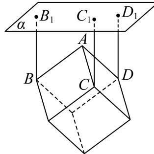
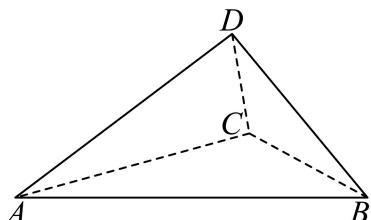

填空题
按本区原卷题号顺序排列。
黄浦 · 第1题 ★☆☆☆☆ · 教师预估
不等式 x−2x< 0的解集是 .
考点：分式不等式。
难度依据：分式不等式；直接调用定义或基本公式，路径短
核查说明：已人工阅读底稿题干和原解；未逐页对照PDF，不作为数学终审。
展开答案与解析
黄浦 · 第2题 ★☆☆☆☆ · 教师预估
设 [a∈R] ，集合 A=[1,3] B=[a,4] ，若 A∩B=[2,3] ，则a =
考点：交集端点求参数。
难度依据：交集端点求参数；直接调用定义或基本公式，路径短
核查说明：已人工阅读底稿题干和原解；未逐页对照PDF，不作为数学终审。
展开答案与解析
黄浦 · 第3题 ★☆☆☆☆ · 教师预估
抛物线 iy2=x 的焦点到其顶点的距离为
考点：抛物线焦点距顶点。
难度依据：抛物线焦点距顶点；直接调用定义或基本公式，路径短
核查说明：已人工阅读底稿题干和原解；未逐页对照PDF，不作为数学终审。
展开答案与解析
黄浦 · 第4题 ★☆☆☆☆ · 教师预估
在 △ABC∣ 中，若 A=45∘ B=30∘ a=26 ，则 ∣b=
考点：正弦定理求边。
难度依据：正弦定理求边；直接调用定义或基本公式，路径短
核查说明：已人工阅读底稿题干和原解；未逐页对照PDF，不作为数学终审。
展开答案与解析
黄浦 · 第5题 ★★☆☆☆ · 教师预估
i为虚数单位，若复数z满足 z−z=2i 且 z=iz, ，则Rez =
考点：共轭与复数相等求实部。
难度依据：共轭与复数相等求实部；需一次代换或条件转换后计算
核查说明：已人工阅读底稿题干和原解；未逐页对照PDF，不作为数学终审。
展开答案与解析
黄浦 · 第6题 ★★☆☆☆ · 教师预估
函数 f(x)=3sinx+sin(2π+x) 的最大值是
考点：诱导公式与辅助角最值。
难度依据：诱导公式与辅助角最值；需一次代换或条件转换后计算
核查说明：已人工阅读底稿题干和原解；未逐页对照PDF，不作为数学终审。
展开答案与解析
黄浦 · 第7题 ★★★☆☆ · 教师预估
已知等比数列 {an} 为严格增数列，其前n项和为 Sn ,若 a1a10=a8,S4−S1=421 ，则该数列的公比为
考点：等比通项求和与严格单调。
难度依据：等比通项求和与严格单调；需组合两类关系并检查区间或等号
核查说明：已人工阅读底稿题干和原解；未逐页对照PDF，不作为数学终审。
展开答案与解析
黄浦 · 第8题 ★★★☆☆ · 教师预估
已知a为常数，圆 (x−a)2+(y+a−2)2=r2(r>0) 与圆 x2+y2=1 有公共点，当r取到最小值时，a的值为
考点：动圆圆心距与最小半径。
难度依据：动圆圆心距与最小半径；需组合两类关系并检查区间或等号
核查说明：已人工阅读底稿题干和原解；未逐页对照PDF，不作为数学终审。
展开答案与解析
黄浦 · 第9题 ★★★☆☆ · 教师预估
本题资料或解析有待核事项，预览不可作为已审定成品。

某商场要悬挂一个棱长为2米的正方体物件作为装饰，如图，A、B、C、D为该正方体的顶点，BB1, CC1, DD1 为三根直绳索，且均垂直于屋顶所在平面α．若平面BCD与平面α平行，且点A到α的距离为2米，则直绳索 BB1 的长度约为 米．（结果精确到0.01米）
考点：正方体斜悬挂与面间距离。
难度依据：正方体斜悬挂与面间距离；需组合两类关系并检查区间或等号
核查说明：原解分析与详解使用不同的外接圆半径；AB=BC等棱长描述混淆，需据原图核算，不能将摘要当结论。；已人工阅读底稿题干和原解；未逐页对照PDF，不作为数学终审。
展开答案与解析

黄浦 · 第10题 ★★★☆☆ · 教师预估
若从2025的所有正约数中任取一个数，则这个数是一个完全平方数的概率为
考点：质因数指数计数；随机约数为平方数。
难度依据：质因数指数计数；随机约数为平方数；需组合两类关系并检查区间或等号
核查说明：已人工阅读底稿题干和原解；未逐页对照PDF，不作为数学终审。
展开答案与解析

黄浦 · 第11题 ★★★☆☆ · 教师预估
本题资料或解析有待核事项，预览不可作为已审定成品。
设 {an} 为等差数列，其前n项和为 Sn ，若 (S8−S7)(S9−S7)<0 ，则满足 SmSm+1< 0的正整数 m =
考点：等差中项与前项和变号。
难度依据：等差中项与前项和变号；需组合两类关系并检查区间或等号
核查说明：原解第二种情况误称数列递增，S16公式系数也错为15，须回源并修订。；已人工阅读底稿题干和原解；未逐页对照PDF，不作为数学终审。
展开答案与解析
黄浦 · 第12题 ★★★★☆ · 教师预估
本题资料或解析有待核事项，预览不可作为已审定成品。
设a、b为常数， f(x)=∣a+sinx∣+∣a−sinx∣ ，若对任意的 ∣b∈(1,2) ，函数 y˙=f(x)−b 在区间[0,2π] 上恰有4个零点，则a的取值范围是
考点：含绝对值正弦方程根数；参数零点分类。
难度依据：含绝对值正弦方程根数；参数零点分类；需多步建模、分类或参数约束
核查说明：原解分段函数缺少2|sin x|分支，需补全。；已人工阅读底稿题干和原解；未逐页对照PDF，不作为数学终审。
展开答案与解析
选择题
按本区原卷题号顺序排列。
黄浦 · 第13题 ★☆☆☆☆ · 教师预估
如果两种证券在一段时间内收益数据的相关系数为0.8，那么表明（ ）
A. 两种证券的收益有反向变动的倾向
B. 两种证券的收益有同向变动的倾向
C. 两种证券的收益之间存在完全反向的联动关系，即涨或跌是相反的
D. 两种证券的收益之间存在完全同向的联动关系，即同时涨或同时跌
考点：相关系数方向与强度。
难度依据：相关系数方向与强度；直接调用定义或基本公式，路径短
核查说明：已人工阅读底稿题干和原解；未逐页对照PDF，不作为数学终审。
展开答案与解析
黄浦 · 第14题 ★★★☆☆ · 教师预估
本题资料或解析有待核事项，预览不可作为已审定成品。
如图，在平行六面体 ABCD−A1B1C1D1 1中， i×a=AA1,b=DB1 ，若→a、 b. 、→c组成空间向量的一个基底，则→c 可以是（ ）

A. − BB1
B. − BC1
C. − BD
D. −
考点：空间向量基底与共面判断。
难度依据：空间向量基底与共面判断；需组合两类关系并检查区间或等号
核查说明：D选项向量端点完全丢失，A/B/C含游离负号，须核原卷。；已人工阅读底稿题干和原解；未逐页对照PDF，不作为数学终审。
展开答案与解析
黄浦 · 第15题 ★★★★☆ · 教师预估
本题资料或解析有待核事项，预览不可作为已审定成品。
设 x1<x2<x3<x4，随机变量 X 取值 x1、x2、x3、x4 的概率均为0.25，随机变量 X1 取值 2x1+x2、2x2+x3、2x3+x4、2x4+x1 的概率也均为0.25，随机变量 X2 取值 2x1−x2、2x2−x3、2x3−x4、2x4−x1 的概率也均为0.25。若记 D[X1]、D[X2] 分别为 X1、X2 的方差，则（ ）。
A. D[X1]<D[X2]
B. D[X1]=D[X2]
C. D[X1]>D[X2]
D. D[X1] 与 D[X2] 的大小关系与 x1、x2、x3、x4 的取值有关
考点：线性组合二阶矩与方差比较；平方和及严格等号条件。
难度依据：线性组合二阶矩与方差比较；平方和及严格等号条件；需多步建模、分类或参数约束
核查说明：题干已回源；原解析未全面数学审校，公式及其他问题仍需处理。；已人工阅读底稿题干和原解；未逐页对照PDF，不作为数学终审。
展开答案与解析
黄浦 · 第16题 ★★★★★ · 教师预估
本题资料或解析有待核事项，预览不可作为已审定成品。
给定四面体ABCD．平面α满足：①A、B、C、D四个点均不在平面α上，也不在α的同侧；②若平面α与四面体ABCD的棱有公共点，则该公共点一定是此棱的中点或两个三等分点之一．设A、B、C、D四个点到平面α的距离分别为d (i = 1,2,3,4)，那 Ldi 的所有不同值的个数组成的集合为（ ）
A. {1, 2, 3, 4}
B. {1, 2, 3}
C. {1, 2}
D. {1}
考点：截面分点与点面距离种数。
难度依据：截面分点与点面距离种数；需证明新定义命题或完成复杂参数分类
核查说明：题干dᵢ下标与集合表述乱码；原解仅列举部分截面，且称四种距离必在同侧未证明，需独立核验完整分类。；已人工阅读底稿题干和原解；未逐页对照PDF，不作为数学终审。
展开答案与解析


解答题
按本区原卷题号顺序排列。
黄浦 · 第17题 ★★★☆☆ · 教师预估
本题资料或解析有待核事项，预览不可作为已审定成品。
已知f (x) = 2x
(1) (6分)若 f(x)−f(2−x)=3 ，求x的值；
(2) (8分)是否存在实数a，使函数 [y=f(x)+af(−x)] 是奇函数？请说明理由
考点：（1）指数方程换元；（2）奇函数必要条件和验证。
难度依据：指数方程与奇函数构造；需组合两类关系并检查区间或等号
核查说明：题干f(x)=2x丢失指数，原解为2^x，实质影响题意，须回源。；已人工阅读底稿题干和原解；未逐页对照PDF，不作为数学终审。
展开答案与解析
黄浦 · 第18题 ★★★☆☆ · 教师预估
在四面体ABCD中， DB=DC=2 DB⊥DC

(1) (6分)若△ABC为正三角形，平面 ABC⊥ 平面DBC，求四面体ABCD体积；
(2) (8分)若AB = AC = 4，AD = 3，求二面角A − BC − D的大小
考点：（1）面面垂直和四面体体积；（2）公共垂线构造二面角。
难度依据：四面体体积与二面角；需组合两类关系并检查区间或等号
核查说明：已人工阅读底稿题干和原解；未逐页对照PDF，不作为数学终审。
展开答案与解析

黄浦 · 第19题 ★★★★☆ · 教师预估
一盒子中有大小与质地均相同的20个小球，其中白球 n(3≤n≤13) 个，其余为黑球
(1) (6分)当盒中的白球数n = 6时，从盒中不放回地随机取两次，每次取一个球，用A表示事件“第一次取到白球”，用B表示事件“第二次取到白球”，求 P(B∣A) 和 P(B) ，并判断事件A与B是否相互独立；
(2) (8分)某同学要策划一个抽奖活动，参与者从盒中一次性随机取10个球，若其中恰有3个白球，则获奖，否则不获奖，要使参与者获奖的可能性最大、最小，该同学应该分别如何放置白球的数量n？
考点：（1）不放回条件概率与独立性；（2）组合数函数相邻比求最值。
难度依据：条件概率独立性与超几何最值；组合数相邻比值；需多步建模、分类或参数约束
核查说明：已人工阅读底稿题干和原解；未逐页对照PDF，不作为数学终审。
展开答案与解析
黄浦 · 第20题 ★★★★☆ · 教师预估
椭圆Γ: a2x2+b2y2=1(a>b>0) 的左、右焦点分别为 F1(−c,0),F2(c,0)(c>0) ，过点 F1 的直线l与Γ 交于点P
(1) (4分)若c = 2，点P的坐标为 (2,2) ，求点 F2 到直线l的距离；
(2) (6分)当b ≤ c时，求满足 PF1⊥PF2 的点P的个数；
(3) (8分)设直线l与Γ的另一个交点为Q，− F1Q=λQP(λ∈R) ，点P的横坐标为 2c ，若Γ的离心率 e>21 ，求λ的取值范围
考点：（1）点到直线距离；（2）直径圆与椭圆交点个数；（3）焦点分点向量与离心率范围。
难度依据：椭圆焦点弦与圆交点；分点向量与离心率；需多步建模、分类或参数约束
核查说明：已人工阅读底稿题干和原解；未逐页对照PDF，不作为数学终审。
展开答案与解析
黄浦 · 第21题 ★★★★★ · 教师预估
设D是R的一个非空子集，函数y = f(x)的定义域为D，若y = f(x)在D上不是单调函数，且存在常数b，使得f(x) ≥ b对任意的 x∈D 成立，则称函数 {y=f(x) 具有性质H，称b为该函数的一个下界
(1) (4分)设 f(x)=x+x1,D=(−∞,0) ，判断函数y = f(x)，x ∈ D是否具有性质H；
(2) (6分)设m为常数， f(x)=31x3−x+1, D=(m,2) ，当且仅当m满足什么条件时，函数y=f(x),x∈D 具有性质H，且 b=31 是该函数的一个下界；
(3) (8分)设 0<a≤1,f(x)=ln(x+1)+ax(x−2),D=(0,1) ，若函数y = f(x)，x ∈ D具有性质H，求a的取值范围：当a在上述范围内变化时，若b总是该函数的下界，求b的取值范围
考点：（1）单调性及无下界判断H性质；（2）非单调区间及给定下界；（3）参数非单调条件与统一下界。
难度依据：非单调有下界的H性质；导数单调与参数统一下界；需证明新定义命题或完成复杂参数分类
核查说明：已人工阅读底稿题干和原解；未逐页对照PDF，不作为数学终审。
展开答案与解析